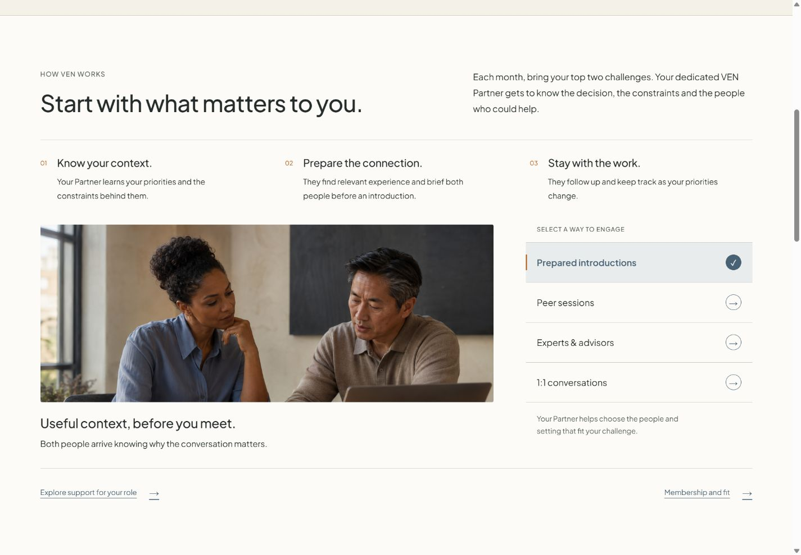

Venture Executive Network · v12.10
A selector that belongs beside the photograph.
The homepage and membership choices now form one editorial list. Fine dividers, equal row heights, small circular controls and a pale blue selected row replace the separate boxed buttons. A copper marker identifies the selected row; hover and keyboard focus remain clear. Phone choices use full-width rows for more readable labels.
Open the standalone site · Open the standard website
Checked
- All four engagement choices and their matching panels.
- Desktop, tablet and phone widths, including 320px; no label overflow.
- Keyboard navigation and visible focus. Touch rows are at least 64px high.
- Selected label contrast: 5.45:1. Labels, circular controls, checkmark, copper marker and focus colors pass their applicable contrast thresholds.
- All 24 page payloads, copy, photographs, assets and scripts preserved. One shared stylesheet was refined.
- 596 internal links and anchors and embedded script syntax verified.
Sharing
The standalone HTML contains the entire website. The site folder is the conventional export for a hosting service such as GitHub Pages. Keep its files together.
This version received focused visual, interaction, responsive and color checks. Earlier versions are preserved. No new cross-model or whole-site accessibility approval is claimed.
Inquiry forms remain demonstrations and do not send messages. Asset and advisor records are included. Publication permissions, live form handling and evidence for public claims remain separate from this selector update.
